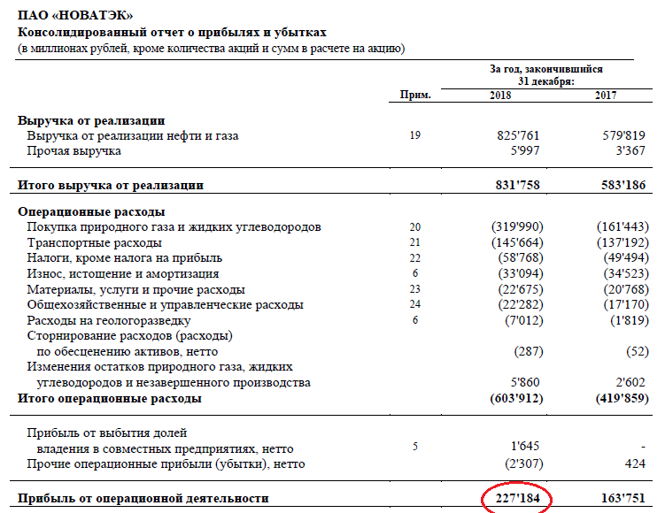
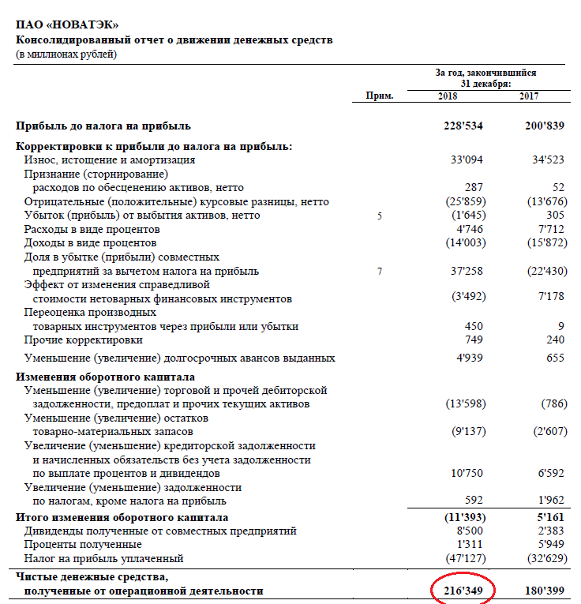
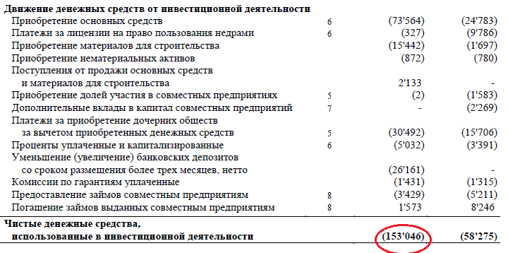
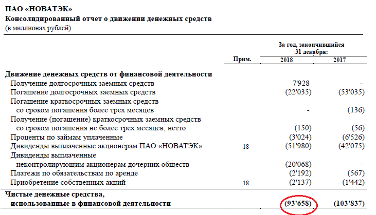

В общепринятом понимании прибыль бывает только двух видов: недостаточной и низкой. Но в финансовом и бухгалтерском мире прибыль имеет несколько градаций, уровней и аспектов.
Для начала обозначим, что такое есть прибыль в принципе. Википедия говорит, что это сумма, на которую доход превышает затраты. С точки зрения определения сути прибыли предприятия она бывает бухгалтерской и экономической.
Бухгалтерская прибыль – это разница между расходами и поступлениями в компанию согласно бухгалтерским правилам. То есть разница между затратами и расходами, которые отражаются в периодической отчетности согласно РСБУ (российские стандарты учета) или МСФО (международные стандарты). Иногда затраты здесь называют явными издержками. Например: сырье для производства, аренда помещений, автомобили, процентные платежи по кредиту, заработная плата и т.д. Это все явные затраты, за которые предприятие заплатило или заплатит конкретные деньги.
Экономическая прибыль несколько более сложное понятие, которым оперирует финансовый анализ предприятий. Можно сказать, что, получая прибыль бухгалтерскую, можно не иметь прибыли экономической.
Экономическая прибыль - это разница между доходами и всеми совокупными издержками. Под совокупными издержками понимаются как явные, так и неявные. Последние, как правило, упираются в оценку рисков деятельности того или иного бизнеса и в недополученную прибыль.
Пример
Возьмем Газпром и Лукойл. Компании имеют много общего: оперируют в нефтегазовом секторе, работают на смежных или на одних и тех же рынках, имеют равный доступ к финансовым рынкам и т.д. То есть можно сказать, что в среднем риски обоих бизнесов близки.
Однако рентабельность инвестиций (ROIC) и активов Лукойла составляет 13,7% и 11,4%. Аналогичные показатели у Газпрома всего 7,56% и 6,49% соответственно. То есть при одинаковых рисках компания зарабатывает меньше. Налицо высокие неявные издержки. В итоге можно говорить, что экономическая прибыль Газпрома ниже бухгалтерской.
Или другой хороший пример – Русгидро. Из-за низких тарифов и высокой стоимости строительства новых объектов на Дальнем Востоке компании ежегодно приходится проводить списания части прибыли из-за экономического обесценения. То есть при таких параметрах денежного потока построенный объект не стоит тех денег, которые были на него затрачены. Соответственно он должен быть переоценен, а разница вычитается из фактической бухгалтерской прибыли.
Определение экономической прибыли нетривиальная задача. Она требует большого погружения в специфику бизнеса компании для определения рисков инвестиционной и операционной деятельности с тем, чтобы сравнить денежные потоки с альтернативными издержками капитала.
Бухгалтерская прибыль в свою очередь имеет несколько классификаций и градаций. Логично, что для определения прибыли на разных уровнях, мы будем говорить о различных затратах.
Источники формирования прибыли
Современное предприятие работает одновременно в трех плоскостях (или на трех различных рынках). Соответственно и полученную прибыль можно классифицировать по источнику ее формирования.
Прибыль от операционной деятельности
На рынке товаров и услуг компания закупает сырье или оборудование для своего производства, нанимает трудовые ресурсы и выплачивает зарплаты, премии и т.д. Все это является затратами. Там же компания реализует свою готовую продукцию или услуги и получает выручку. Получившийся доход мы называем прибылью от основной (операционной) деятельности. Часто этот показатель отображается в отчете о прибылях и убытках. Для примера возьмем отчетность МСФО Новатэка.
Этот показатель также можно посмотреть в отчете о движении денежных средств. При этом нужно понимать, что чистые денежные средства, полученные от операционной деятельности, не являются строго прибылью за определенный период, хотя цифры зачастую довольно похожи.

Прибыль от инвестиционной деятельности
Любая развивающаяся компания осуществляет инвестиционную деятельность, будь то покупка нового компьютера или разработка нового месторождения. В результате инвестиционной деятельности, как правило, возникает отток средств из компании, который возвращается в будущем через увеличение продаж товаров или услуг.
Однако бывает и приток средств от инвестиционной деятельности. Фирма может инвестировать в совместное предприятие, купить часть другой компании и получать дивиденды или просто разместить имеющиеся у нее свободные средства в государственных облигациях. Все это также инвестиционная деятельность. Совокупность расходов и доходов от этих операций и будет денежным потоком от инвестиционной деятельности.

Прибыль от финансовой деятельности
Современная компания также участвует и на финансовом рынке, где привлекает акционерный или заемный капитал путем размещения акций, облигаций или путем открытия кредитных линий в банках. Когда эмитент выплачивает дивиденды или проводит программу обратного выкупа акций считается, что это также операции на финансовом рынке. Соответственно по финансовой деятельности также может сформироваться прибыль или убыток. Любой убыток можно назвать отрицательной прибылью.
В случае с отчетностью Новатэк по МСФО за 2018 г. сальдо денежных средств, использованных в финансовой деятельности, оказалось отрицательным. Убыток составил в основном за счет погашения долга и выплат дивидендов акционерам.

Классификация прибыли по составу
Валовая прибыль
Как правило, отчет о прибылях и убытках включает в себя валовую прибыль. В общем определении это выручка от операционной (основной) деятельности компании за вычетом себестоимости проданного товара или услуги.
К примеру, для ритейлера Магнит себестоимостью будет закупочная цена товара у поставщиков сети. Вычитая из валовой прибыли операционные и коммерческие издержки (аренда, зарплаты, реклама и пр.), мы получаем операционную прибыль. В российских стандартах отчетности она называется прибылью от продаж. В финансовом анализе часто фигурирует аббревиатура EBIT (Earnings Before Interest and Taxes) – чистая прибыль до уплаты процентов и налогов или иными словами чистая прибыль + проценты + налог на прибыль.
Операционная прибыль
Но единого стандарта, что же конкретно называть себестоимостью или валовой прибылью нет. Для Новатэка, например, в себестоимость будут входить транспортные затраты, расходы на геологоразведку, бурение, налоги (за исключением налога на прибыль), общехозяйственные расходы и т.д. То есть вычитая из выручки эти затраты, а также отчисления на амортизацию и списания, мы сразу получаем операционную прибыль, то есть прибыль от основной деятельности компании.
В финансовом анализе часто используется понятие EBITDA (Earnings Before Interest, Taxes, Depreciation and Amortization) для оценки денежных поступлений в компанию с учетом неденежных расходов. Под такими расходами понимаются отчисления от валовой прибыли, но деньги при этом компанию не покидают и могут служить как источником для инвестиционной деятельности, так и быть распределены среди инвесторов.
Иными словами, показатель EBITDA можно представить, как операционная прибыль + амортизация.
Доналоговая прибыль
Далее вычитая из операционной прибыли расходы по финансовой деятельности, мы получаем прибыль до уплаты налогов. В большинстве случаев можно было бы переходить сразу к следующему конечному определению прибыли, однако стоит отметить, что есть и необлагаемая налогом прибыль. К примеру, это вырученные от размещения акций средства, которые пойдут на формирование уставного капитала. Также могут не облагаться налогом авансы и предоплаты. Но в большинстве случаев основу доналоговой прибыли все же составляет доход от основной деятельности облагаемый стандартным налогом с базовой ставкой 20%.
Чистая прибыль
Вычитая все обязательные платежи из операционной прибыли, получаем прибыль чистую или в переводе на акцию EPS (Earnings per Share). Этот показатель очень часто фигурирует в дивидендной политике, поэтому он важен для инвесторов. Но вместе с тем, он не всегда определяет рентабельность или перспективу бизнеса, так как ранее мы выяснили, что кроме чистой прибыли в компании остается амортизация и другие разовые неденежные списания.
Таким образом чистая прибыль компании равна выручке – себестоимость – операционные затраты - амортизация и списания – налог на прибыль.
Как правило, прибыль компании формируется на регулярной основе. Однако бывает так, что продажа какого-либо актива, крупный аванс или иные поступления могут принести единоразовую прибыль. К примеру, после судебного решения о выплате АФК Система компенсации Башнефти, нефтяная компания получила на баланс единоразовую прибыль 100 млрд руб. (до вычета налогов). Важно различать такого рода прибыль, потому как она может повысить дивидендные выплаты лишь временно.
Также инвесторы могут столкнуться с единовременным ростом дивидендов в связи решением о выплате средств из нераспределенной прибыли компании. Эта та часть прибыли, которая ранее не была направлена на выплаты акционерам по правилам дивидендной политики или другим соображениям.